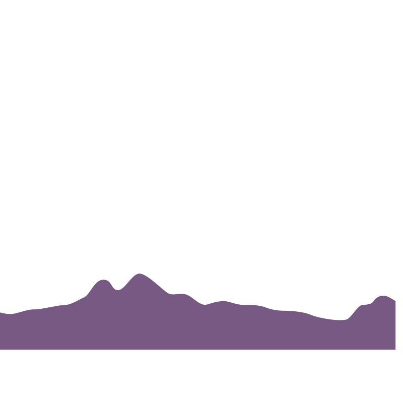

<body style="margin: 0;padding: 0;">
<div style="width: 100vw;height: 100vh;overflow: hidden;position: relative;  /* fallback for old browsers */  /* Chrome 10-25, Safari 5.1-6 *//* Permalink - use to edit and share this gradient: http://colorzilla.com/gradient-editor/#edde5d+0,f09819+20,c85e81+41 */background: #edde5d; /* Old browsers */background: -moz-linear-gradient(top, #edde5d 0%, #ffc034 20%, #c85e81 41%); /* FF3.6-15 */background: -webkit-linear-gradient(top, #edde5d 0%,#ffc034 20%,#c85e81 41%); /* Chrome10-25,Safari5.1-6 */background: linear-gradient(to bottom, #edde5d 0%,#ffc034 20%,#c85e81 41%); /* W3C, IE10+, FF16+, Chrome26+, Opera12+, Safari7+ */filter: progid:DXImageTransform.Microsoft.gradient( startColorstr='#edde5d', endColorstr='#c85e81',GradientType=0 ); /* IE6-9 */ /* W3C, IE 10+/ Edge, Firefox 16+, Chrome 26+, Opera 12+, Safari 7+ */">     
    
    
    
    
    
    
</div>
</body>